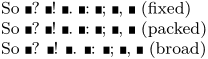

Syntax
| \setupspacing[...] | |
| [...] | fixed packed broad |
Description
Setup the spacing rules. Punctuation, for this command, is the set . ? ! : ; ,.
| fixed | equal spaces everywhere |
| packed | equal spaces between words, equal slightly larger spaces after punctuation |
| broad | more space after some punctuation |
Example
-
\def\X{\blackrule[width=0.1cm]} \setupspacing[fixed] So \X? \X! \X. \X: \X; \X, \X{} (fixed) \setupspacing[packed] So \X? \X! \X. \X: \X; \X, \X{} (packed) \setupspacing[broad] So \X? \X! \X. \X: \X; \X, \X{} (broad) \stopcolumns
- 
See also
- \setupalign for more spacing-related settings
- spac-hor.mkiv for the source code
Help from ConTeXt-Mailinglist/Forum
All issues with: